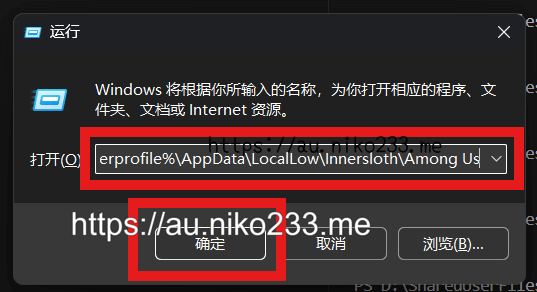
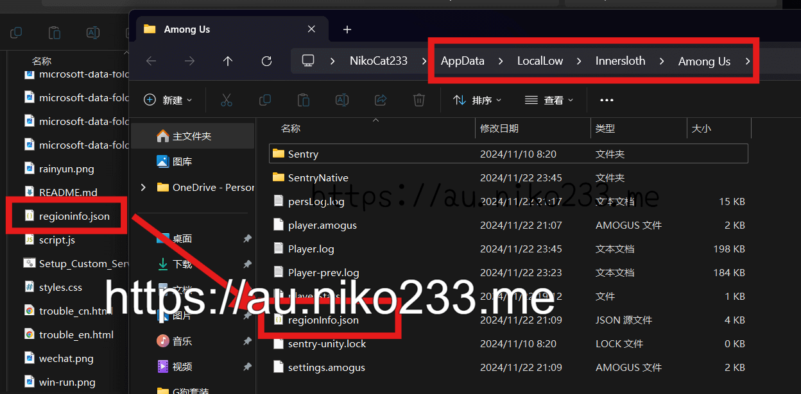

Windows桌面用户
如果你游玩的是TOHE等Niko支持的H系模组，通常其已经内置了Niko的私服。
方式一：下载一键安装脚本并运行
非常容易！只需要点击下面的链接，下载这个一键脚本并运行，然后重启你的游戏即可！
https://au.niko233.me/Setup_Custom_Server.bat
此方式报错？尝试方式二
方式二：手动复制regioninfo.json
首先，你需要点击下面的链接下载私服信息文件regioninfo.json
https://au.niko233.me/regioninfo.json
部分不长眼的浏览器会直接打开上述页面，右键另存为regioninfo.json即可
然后，按下Win + R 或者手动打开运行，在其中输入 | 粘贴以下地址（单击可复制到剪贴板）
%userprofile%\AppData\LocalLow\Innersloth\Among Us
点击确定，会跳转到Among Us的数据文件夹，将你下载的regioninfo.json复制进去并替换
最后重启游戏即可
354私服
如果你是354牢玩家，直接复制下述链接即可
对于354等老版本的直连地址
北美 : 354na.niko233.me:22423 或者 354us.niko233.me:22423
亚洲中国 : 354as.niko233.me:22423 或者 354cn.niko233.me:22423
欧洲德国 : 354eu.niko233.me:22423
扩展: 微软商店版AU安装私服
首先需要从方法2中下载regionInfo.json
下载完成后，点击复制下面的文本，粘贴到运行里面，它会打开微软版本的数据文件夹
%userprofile%\AppData\Local\Packages\Innersloth.AmongUs_fw5x688tam7rm\SystemAppData\wgs
由于微软版本对游戏存档进行了加密，所有的文件和目录都是长串的数字，你需要按图找到以下的目录:

打开图中所示目录，里面会有几个长数字名的小文件，依次右键-用记事本打开

直到你找到图中所示的regionInfo文件，这就是你将要修改的

将你之前下载到的regionInfo.json中的内容复制到微软的文件中，然后重启你的游戏。

现在你就能在微软商店版本中看到私服了
如果你的Windows上有多个用户账户，那么就会有多个这样的长数字文件夹，每个都改一遍就行了。
扩展方式：Mini.RegionInstall法
如果你所玩的模组包括了Mini.RegionInstall这个插件模组，可以从以下链接下载配置文件
https://au.niko233.me/at.duikbo.regioninstall.cfg
将之复制到你的 Among Us\BepInEx\config，替换掉对应的文件并重启游戏即可